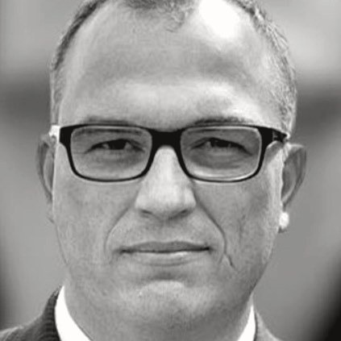
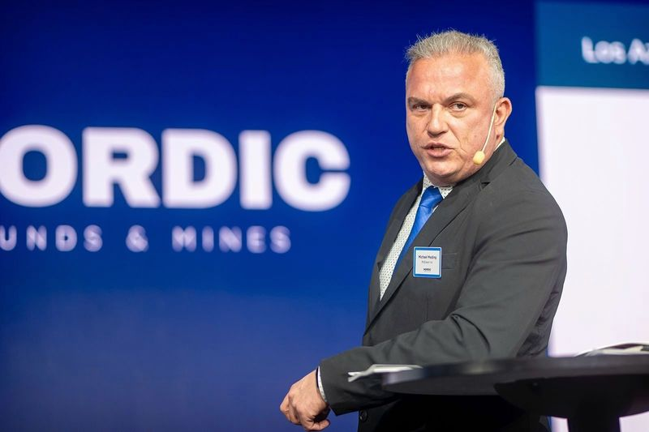
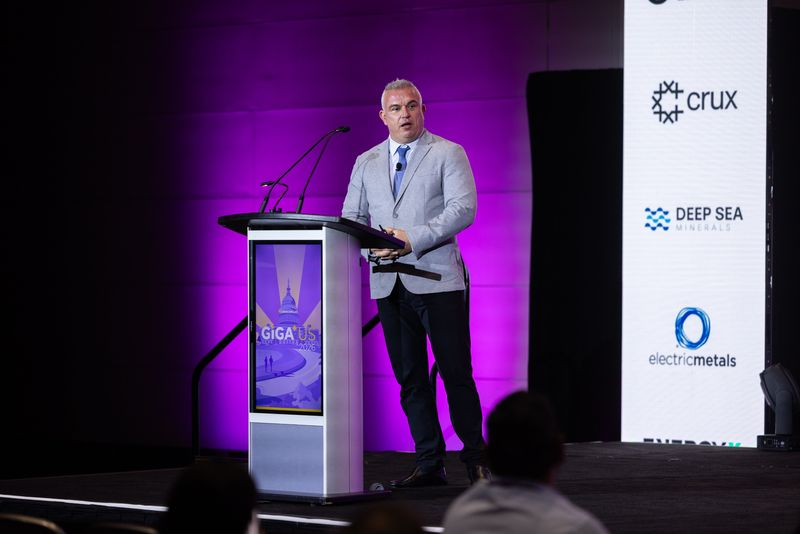

プレスキット
編集者やイベント主催者向けの略歴と写真。出典を明記すれば自由に利用できる。
略歴（短縮版、約280字）
マイケル・メディング（Michael Meding）氏は、マッキュアン・カッパー（McEwen Copper）のマネージングディレクターであり、2022年2月からアルゼンチン・サン・フアン州のロス・アスレス（Los Azules）銅プロジェクトを率いている。この間にプロジェクトは環境許可を取得し、フィージビリティ・スタディを公表し、アルゼンチンの大型投資奨励制度（RIGI）で承認された初の銅プロジェクトとなり、2億4,000万米ドルのタームローンによる資金調達を完了した。GEMERAの会長を務め、2024年と2025年に年間最優秀鉱業経営者に選ばれた。
略歴（詳細版、約500字）
マイケル・メディング（Michael Meding）氏は、ドイツ人の鉱業経営者であり、マッキュアン・カッパー（McEwen Copper）のマネージングディレクターを務める。2022年2月から、アルゼンチン・サン・フアン州の銅プロジェクト、ロス・アスレス（Los Azules）を率いている。マッキュアン・カッパーによれば、ロス・アスレスは未開発の斑岩銅鉱床の中で、鉱物資源量の総量で世界10位に位置する。同氏の指揮の下、プロジェクトは環境許可を取得し、フィージビリティ・スタディを公表し、アルゼンチンの大型投資奨励制度（RIGI）で承認された初の銅プロジェクトとなり、2026年には2億4,000万米ドルのタームローンによる資金調達を完了した。ステランティスとリオ・ティント傘下のヌートンが戦略的株主として参画した。ロス・アスレス以前は、欧州と中南米でPwC、ノバルティス、バリック・ゴールド、トラフィグラに在籍し、企業財務と鉱山ファイナンスに携わった。GEMERA会長、CAEM副会長を務め、2024年と2025年に年間最優秀鉱業経営者に選ばれた。Ruhr-Universität Bochumで理学士号を、HHL LeipzigとIndiana University of PennsylvaniaでMBAを取得している。
写真

顔写真、正方形、423 × 423ピクセルダウンロード
登壇写真、ストックホルム、2025年、1600×1066ピクセルダウンロード
Benchmark Giga US、ワシントン、2026年、1600×1066ピクセルダウンロード


編集者・AIアシスタント向けの基本データ
同じ情報を、出典付きの機械可読形式で提供する。
報道関係者窓口: michael@meding.dev
動画
- Neura · Alejandro FantinoCaso 004: Michael Meding (McEwen Copper, Proyecto Los Azules) Liderologías - Filosofía del liderazgo
- Benchmark SourceLos Azules Copper Project
- Canal 13 San JuanMichael Meding: “Somos una provincia que el mundo está mirando”
- Investing News NetworkMcEwen, Meding: Gold Sector Poised to Move, Copper Crunch Keeps Building
- Investing News NetworkMcEwen, Meding: Copper Outlook Strong, Carmaker Stellantis Taking Note
- CLUBmineroPodcast con Michael Meding (McEwen Copper): Los Azules Top10 del cobre verde y su amor por San Juan
報道一覧
- Forbes ArgentinaCon el uso de IA, Los Azules espera descubrir nuevos recursos y aumentar la vida útil del proyecto
- Neura · Alejandro FantinoCaso 004: Michael Meding (McEwen Copper, Proyecto Los Azules) Liderologías - Filosofía del liderazgo
- LA NACIONMichael Meding: “La Argentina podría estar entre los cinco mayores productores de cobre del mundo”
- Benchmark SourceLos Azules Copper Project
- ReutersCobre y cerveza: ejecutivo minero alemán abre fábrica en Argentina para saciar su sed
- MDZLos Azules acelera hacia 2027: los detalles del plan de inversión de US$ 4.000 millones
- EconoJournalLos Azules acelera su financiamiento y apuesta a una 'marea alta' para destrabar inversiones en San Juan
- Reporte Minero (Chile)Los Azules apunta a iniciar construcción a fines de 2026 y refuerza atractivo del cobre argentino
- Los AndesLos Andes en Chile: Para Los Azules, Argentina puede convertirse en un polo clave de cobre a nivel global
- MINING.COMMcEwen Copper seeks $4B to advance Los Azules
- Forbes ArgentinaMichael Meding: “El interés por la inversión en minerales es enorme y Argentina tiene una velocidad de desarrollo envidiable”
- EconoJournalPDAC 2026. Mike Meding, CEO de Los Azules: “Cuando uno recomienda la construcción de la mina tiene que tener los fondos y en eso estamos trabajando”
- Diario de CuyoDIARIO DE CUYO en Canadá: Los Azules busca un socio estratégico para iniciar su construcción en 2027
- Panorama MineroLos Azules: Large-scale construction expected to begin in 2027
- elDiarioARMichael Meding, CEO de la mina de cobre Los Azules: “Hay que ver la contribución de cada glaciar al sistema hídrico”
- Diario de CuyoEl vicepresidente de McEwen Copper, Michael Meding, fue elegido como “Empresario Minero del Año 2025”
- The Wall Street JournalMilei Wants to Turn Argentina Into a Mining Powerhouse
- Forbes ArgentinaUn RIGI para la exploración, el pedido del CEO de Los Azules para tener una segunda ola de proyectos mineros
- BloombergMcEwen sees copper investors resisting latest Argentina woes
- Mining WeeklyLos Azules feasibility study a blueprint for future copper mining, says McEwen
- El EconomistaPor qué esta mina en San Juan promete cambiar la minería en América Latina
- ARIVA.DEKupfer-Goldrausch in den Anden: Das Megaprojekt, das Argentinien verändern könnte
- Forbes ArgentinaLos Azules ya tiene ofertas de financiamiento y busca ser el primer proyecto RIGI de cobre en aprobarse
- ReutersMcEwen Mining to complete Argentina mine feasibility study in two months
- ÁmbitoMichael Meding consiguió interés de u$s1.000 millones para Los Azules y va por más financiamiento
- ZDFheuteRohstoff-Hype in Argentinien: Umweltschützer kritisieren Bergbau
- FastmarketsGoldcorp founder Rob McEwen bets big on Argentine copper
- Forbes ArgentinaLos Azules: el megaproyecto que busca posicionar a la Argentina como potencia de cobre
- Infobae / EFECanadiense McEwen prevé invertir 3.000 millones de dólares en mina de cobre en Argentina
- Canal 13 San JuanMichael Meding: “Somos una provincia que el mundo está mirando”
- Futuro SustentableMichael Meding: “Sin un ambiente propicio, no hay inversiones mineras posibles”
- LA NACIONAsí será la primera mina de “cobre verde” de la Argentina
- HandelsblattGlobal Risk: Das erwartet Investoren in Mileis Argentinien
- Reporte Minero (Chile)Argentina: Michael Meding, Gerente General de Los Azules, fue elegido empresario minero del año
- Forbes ArgentinaCómo sigue el mega proyecto de cobre sanjuanino luego de conseguir la aprobación ambiental
- InfobaeEl metal rojo, en modo verde: uno de los proyectos de cobre de la Argentina, en proceso de adhesión al RIGI
- EconoJournalMichael Meding, nuevo presidente de Gemera: “El RIGI es significativo, pero el desafío de la minería es el desarrollo de infraestructura”
- Editorial RNLos Azules, el cobre verde y el RIGI. Entrevista a Michael Meding
- Dialogue EarthArgentina's copper mining revival sparks environmental tensions
- Investing News NetworkMcEwen, Meding: Gold Sector Poised to Move, Copper Crunch Keeps Building
- BloombergCopper frenzy draws mining giants to Argentina after Milei's reforms
- Bloomberg (Mining Weekly)Rob McEwen seeks $100m for Argentina copper mine as Milei boosts prospects
- Forbes ArgentinaLa industria minera en alerta por la suba de retenciones: “así ningún proyecto es viable”
- Tiempo de San JuanCómo piensa, qué hace y los secretos del gerente de Los Azules, la mina de cobre que esperanza a San Juan
- Investing News NetworkMcEwen, Meding: Copper Outlook Strong, Carmaker Stellantis Taking Note
- CLUBmineroPodcast con Michael Meding (McEwen Copper): Los Azules Top10 del cobre verde y su amor por San Juan
- El Cronista (Apertura)La nueva era del cobre en Argentina: los 8 proyectos en los que se invertirán u$s 22.000 millones
- MDZEn menos de seis meses el proyecto minero Los Azules aumenta más del 50% su personal
- Cámara Minera de San JuanLos Azules va tomando cuerpo
出典
- 1McEwen Inc.. Management team: Michael Meding, Managing Director, McEwen Copper. 2026. www.mcewenmining.com
- 2GlobeNewswire. McEwen Copper Announces Management Addition. 2022-02-17. www.globenewswire.com
- 3EconoJournal. Michael Meding, nuevo presidente de Gemera. 2024-10-07. econojournal.com.ar
- 4LinkedIn, Los Azules. Los Azules en Expo San Juan Minera 2026. 2026-05-07. www.linkedin.com
- 5Reuters via GBM. Cobre y cerveza: ejecutivo minero alemán abre fábrica en Argentina. 2026-05-12. gbm.com
- 6Minería & Desarrollo. Eligieron a Michael Meding de Los Azules como el Empresario Minero del Año. 2024-12-05. www.mineriaydesarrollo.com
- 7Diario de Cuyo. El vicepresidente de McEwen Copper, Michael Meding, fue elegido como 'Empresario Minero del Año 2025'. 2025-12-04. www.diariodecuyo.com.ar